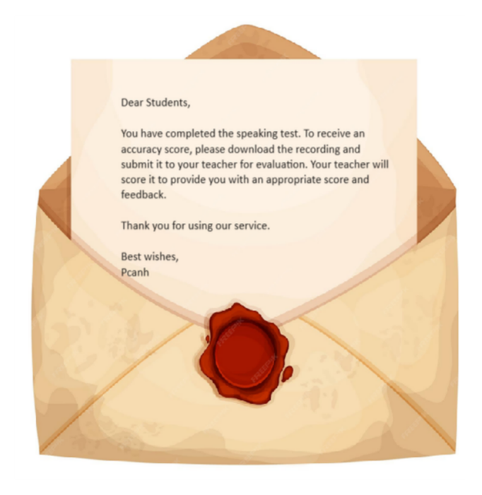

Advantage:
With an easy-to-use, user-friendly interface and nearly 90% of the processes automated and similar to the actual speaking test, it helps users become familiar with and practice so they won’t feel unfamiliar during the official exam.
Notice:
Please note that the software does not have a grading function because AI CANNOT replace humans in grading speaking tests. For optimal learning and progress, it is recommended to use the recorded clips as materials for self-review or to seek feedback from more experienced individuals !!!
Advantages:
_____________________________________________________
With an easy-to-use, user-friendly interface and nearly 90% of the processes automated and similar to the actual speaking test, it helps users become familiar with and practice so they won’t feel unfamiliar during the official exam.
The application offers a range of practice modes, including full mock tests and individual sections, allowing users to tailor their preparation according to their specific needs and strengths. This flexibility ensures that users can focus on areas where they need the most improvement and gain confidence in handling different parts of the speaking test.
The built-in randomization of questions ensures a diverse practice experience, simulating real test conditions and preparing users to handle unexpected questions. This feature helps in building adaptability and reduces test anxiety by familiarizing users with various question types and formats. Moreover, If users are not ready for the simulated speaking mock test, they can experience the practicing mode with all the displayed questions.
Notice:
_____________________________________________________
Please note that the software does not have a grading function because AI CANNOT replace humans in grading speaking tests. For optimal learning and progress, it is recommended to use the recorded clips as materials for self-review or to seek feedback from more experienced individuals !!!
While the application provides a simulated environment and practice opportunities, it does not offer personalized feedback or detailed assessment of performance. For comprehensive evaluation and targeted improvement, users should consider consulting with a language instructor or attending coaching sessions to receive expert guidance.
After completing both the practice test and the mock test, the ending interface will display a "Tips" button. Clicking this button will provide specific instructions on how to convert your test recording into a transcription using online tools. You can then use this transcription to check grammar or employ AI tools like ChatGPT or Gemini for grading. HOWEVER, IT'S IMPORTANT TO REMEMBER THAT THESE AI TOOLS CANNOT EVALUATE LIKE HUMANS, AND THEIR GRADING RESULTS MAY NOT BE ENTIRELY ACCURATE.

 Contact: +84 833953819
Contact: +84 833953819 ZALO:
ZALO:  0388953819
0388953819 Gmail: phucanhnguyen0408@gmail.com
Gmail: phucanhnguyen0408@gmail.com Youtube: Virtual Speaking Room
Youtube: Virtual Speaking Room